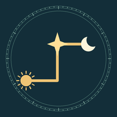

Star Routes
A constellation logic puzzle for iPhone. Draw one route from sun to moon, picking up each star and obeying the marks along the way.
What is the iPhone puzzle where one constellation changes the next?
In Star Routes, a sending chart has two lettered relays. Finish through A or B and the same letter lights on the next chart. Your next route must pass through it.
What do the diamond and twin bars mean?
A diamond requires a corner. The twin bars require a straight line. Both count as marks you must visit before finishing at the moon.
How many star charts are there?
Play 96 campaign charts in eight books. A separate pool of 365 charts supplies the dated daily challenge. Solve eight charts in a book to open the next one.
Can I undo a line or ask for a hint?
Retrace one stop with your finger, use Undo, or ask for a hint. When your current route has reached a dead end, the hint tells you how far to retrace.